Шаг 1: подготавливаем овощи к варке.
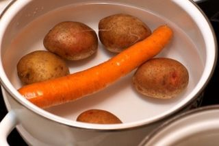
Берем картофель, морковь и свеклу. Промываем их под проточной водой от песка, пыли и грязи. Берем две глубокие кастрюли. В одну из них укладываем морковь и картофель.
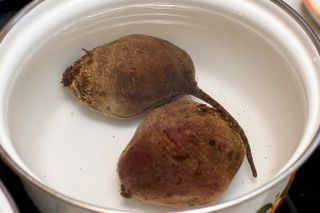
Во вторую укладываем свеклу. Наполняем кастрюли водой и ставим их на плиту. Конфорки включаем на сильный уровень. После закипания воды в кастрюлях наполненных овощами, конфорки на плите можно будет прикрутить. Овощи варятся на среднем или маленьком огне.
Шаг 2: варим свеклу.
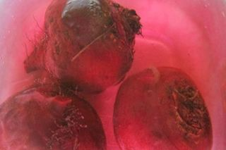
Варка свеклы это целое произведение искусства. Во-первых свеклу для винегрета выбираем не большую и немного приплюснутую. Такая свекла будет, быстрей варится. После того, как свеклу промыли ни в коем случае не обрезаем с нее хвостики. Она должна остаться целой и невредимой. Кастрюлю со свеклой ставим на средний огонь, пускай варится. Воду в кастрюли со свеклой не солим, от соли овощ может стать твердым. Для того, чтобы наш винегрет был красивый, свекла должна быть яркого бордового цвета. И чтобы во время варки она его не потеряла, после закипания воды добавьте в кастрюлю со свеклой 1 чайную ложку столового уксуса. Проверяем готовность свеклы вилкой. Ее зубцы должны легко входить в готовый овощ. Свекла варится примерно один или полтора часа. А сейчас, приступим к процессу варки других овощей.
Шаг 3: Шаг: 3 варим картофель и морковь.
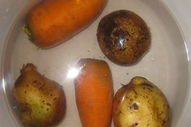
Варим картофель и морковь. Эти два овоща можно отваривать вмести в одной кастрюли. Целый не почищенный картофель варится примерно 30 – 35 минут на средне огне. Морковь варится примерно 40 минут. Поэтому во время варки этих овощей надо часто проверять их готовность. Берем вилку и легонько вводим ее зубцы в картофель и морковь. Если зубчики вилки проходят легко, значит, овощи готовы и их можно доставать с кастрюли. Если же зубчики проходят в овощи тяжело значит надо их доварить. Но хочу вам сказать, морковь в любом случае варится дольше, чем картофель. Поэтому картофель вытаскиваем с кастрюли раньше. Переваренный картофель в салат не годится.
Шаг 4: охлаждаем овощи.
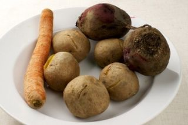
Овощи сварились. Выкладываем их в глубокую тарелку при помощи вилки. Есть несколько способов остудить горячие овощи. Оба способа хороши по-своему. Первый способ: Отварные нечищеные горячие овощи заливаем холодной проточной водой. Даем постоять им в воде 20 – 25 минут. Остывшие овощи перекладываем в глубокую тарелку и даем обсохнуть. Лично я предпочитаю традиционный способ. Отварные горячие овощи выкладываем в глубокую тарелку, и ставим их на окно остужаться, столько времени, сколько им понадобится. А тем временем занимаемся приготовлением всех остальных ингредиентов. В любом случае итог один - овощи больше не горячие. Остывшую морковь вместе с картофелем и свеклой отчищаем ножом от кожуры и поочередно нарезаем.
Шаг 5: нарезаем овощи.
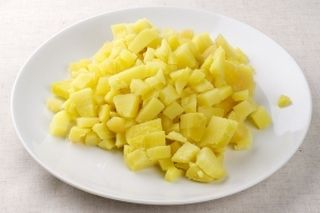
Остывшие овощи нарезаем. Берем разделочную доску. Укладываем на нее отварной остывший и отчищенный от кожуры картофель и нарезаем его ножом на мелкие кубики. Размер кубика 5 на 5 миллиметров. Нарезанный картофель кладем на отдельную тарелку. Промываем доску и нож под проточной водой. Чтобы не ждать пока, они обсохнут, обтираем их бумажным кухонным полотенцем. Нож и разделочная доска моются и обтираются бумажными кухонными полотенцами каждый раз после использования.
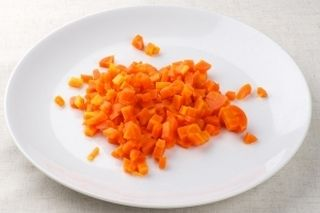
На чистую разделочную доску укладываем остывшую и отчищенную морковь. Берем нож и при помощи его нарезаем овощ на кубики. Размер кубика 5 на 5 миллиметров. Нарезанную морковь кладем на отдельную тарелку и отставляем в сторону.
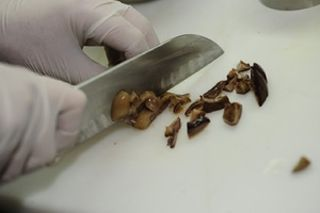
Берем маринованные грибы. Укладываем их на разделочную доску и при помощи ножа рубим их на небольшие произвольные по форме кусочки. Нашинкованные грибы укладываем на отдельную тарелку и отставляем в сторону.
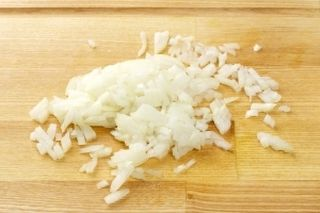
Берем 1 головку репчатого лука. Отчищаем ее от кожуры. Промываем под проточной водой. Укладываем его на разделочную доску и ножом нарезаем лук на мелкие кубики. Размер кубика 2 на 2 миллиметров. Порезанный репчатый лук укладываем на отдельную тарелку и отставляем в сторону.
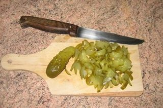
Берем кислый огурец. Лучшие огурцы для настоящего винегрета – квашеные огурцы. Если у вас таких нет, подойдут любые соленые огурцы. Берем огурец, стряхиваем с него остатки рассола в раковину. Укладываем его на разделочную доску и при помощи ножа разрезаем огурчик поперек на две части. Укладываем их вдоль и нарезаем соломкой. Нарезанный огурец кладем на отдельную тарелку и отставляем ее на время в сторону.
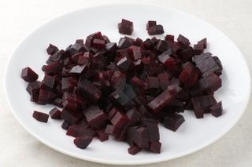
Свекла имеет яркую бордовую окраску, поэтому этот овощ мы всегда нарезаем последним. Берем отчищенную и остывшую свеклу. Укладываем ее на разделочную доску и нарезаем при помощи ножа на средний кубик. Диаметр кубика 5 на 5 миллиметров. Нашинкованные грибы укладываем в отдельную миску и отставляем в сторону. Все овощи для нашего блюда подготовлены. Осталось приготовить важный ингредиент – путассу.
Шаг 6: отвариваем путассу.
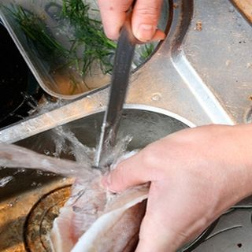
Берем 300 грамм тушки путассу. Эту рыбку можно купить в магазине в замороженном виде. Размораживаем путассу. Промываем и подчищаем ее ножом для рыбы под холодной проточной водой, от остатков льда и мелкой чешуи.
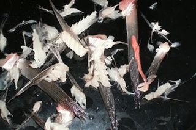
На разделочной доске, предназначенной для чистки нарезки рыбы, отчищаем путассу от крылышек и плавников.
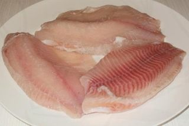
При помощи ножа для рыбы, разрезаем путассу вдоль и вытаскиваем хребет с костями. Снимаем с рыбы шкуру. Отчищенную рыбу еще раз промываем под проточной холодной водой. Укладываем филе путассу на тарелку.
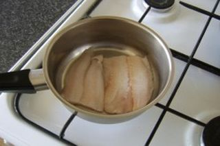
Берем сотейник средних размеров. Укладываем в него 3 горошка черного перца, 3 горошка душистого перца, 2 лаврового листа. Берем разделочную доску, укладываем на нее корень петрушки. Его нам надо не много, всего 50 грамм. Шинкуем корень петрушки, ножом на мелкие кусочки. Сверху на все ингредиенты выкладываем сырое филе путассу. И наливаем в сотейник воды. Так что бы она покрыла филе. Досыпаем соль по вкусу. Главное не пересалите, рыба быстро вбирает в себя соль. Включаем плиту на средний температуру и ставим на конфорку сотейник с рыбой и приправами. Варится путассу на среднем огне примерно 20 -30 минут.
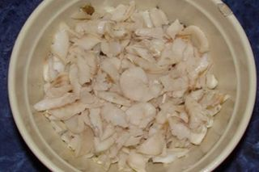
После того как филе приготовилось, стало мягким и рассыпчатым, снимаем сотейник с плиты. Сливаем с него воду и оставляем готовое филе путассу остывать прямо в сотейники. Берем доску для нарезки рыбы и укладываем на нее остывшее филе. Нарезаем путассу на средние кусочки ножом для рыбы. Примерный диаметр кусочка 7-10 миллиметров. Укладываем нарезанное отварное филе путассу на отдельную тарелку. Ароматная пряная рыбка готова и мы с вами почти закончили все приготовления. Осталось несколько штрихов.
Шаг 7: смешиваем все ингредиенты в салат.
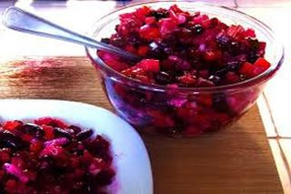
Берем глубокую миску, высыпаем в нее ложкой нарезанную отварную свеклу и взбрызгиваем овощ небольшим количеством растительного масла. Этот процесс необходим для того чтобы свекла в готовом винегрете не окрасила все овощи в темный бордовый цвет. Даем свекле постаять в масле 5 -7 минут, добавляем отварное и нарезанное филе путассу. После этого при помощи ложки всыпаем все остальные подготовленные заранее овощи в большую миску со свеклой и отварной рыбой. Заправляем все ингредиенты растительным маслом. Подсаливаем по вкусу и тщательно, но аккуратно, так чтобы не повредить форму нарезки продуктов, перемешиваем все ингредиенты, ложкой. Салат готов.